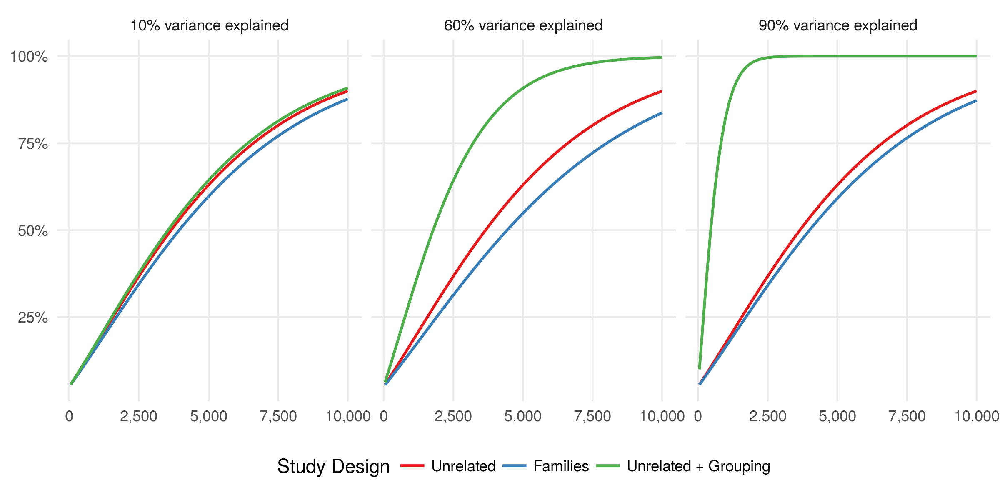

1 Manuscript
Title: Statistical power in GWAS revisited: sample size, genetic relatedness, and gene-by-environment interactions
Abstract: Genome-wide association studies (GWAS) have identified thousands of genetic variants associated with complex diseases and heavily rely on increasing the sample size. Recent analyses of biobank-scale genetic data suggest: (i) inclusion of genetically related individuals empowers GWAS (Loh et al. 2018); (ii) the wealth of collected environmental exposures has potential to uncover gene-by-environmental interactions (Young, Wauthier, and Donnelly 2016). However, quantification of GWAS power — the non-centrality parameter (\(NCP\)) of association test, which is proportional to the sample size (\(n\)) and the variance explained by genetic variant (\(q^2\)) — holds only for unrelated individuals. Here, we first expanded it by incorporating individual relationships by linear mixed model. We next studied gene-by-environment interactions, where interaction effect on trait is tested in the presence of marginal genetic effect. In result, the derived formulas have a range of implications. For testing marginal genetic effect, one can quickly assess the power in studies involving related individuals. Because of the potential gain in power for testing gene-by-environment interaction, the formula for interactions will allow optimization of the study design of related individuals.
1.1 Methods and Analytical Derivations
1.1.1 Association model
\[\begin{equation} y \sim (X \beta, V) = (\mu + \beta_x x, \sum{\sigma_i^2 R_i} + \sigma_r^2 I) \tag{1.1} \end{equation}\]1.1.2 Testing marginal genetic effect
Consider a set of related individuals, which relatedness is expressed by the kinship matrix (\(K\)), and association between outcome (\(y\)) and genotype (\(g\)) is evaluated by linear mixed model. For a given phenotypic variance-covariance matrix (\(V\)), we show that the non-centrality parameter for marginal association test can be approximated as following:
\[\begin{equation} NCP = \hat{\beta}_g^2 / var(\hat{\beta}_g) \approx \hat{\beta}_g^2 tr( \hat{V}^{-1} \Sigma_g) \tag{1.2} \end{equation}\]where \(tr\) is the trace operator and \(\Sigma_g\) is the covariance matrix of genotypes.
For families we have \(V = \sigma_k^2 K + \sigma_r^2 I\) and \(\Sigma_g = \sigma_g^2 K\), that results in following:
\[\begin{equation} NCP_{fam} = q^2 tr( (\sigma_k^2 K + \sigma_r^2 I)^{-1} K ) \tag{1.3} \end{equation}\]That means \(NCP_{rel} \leq NCP\), i.e. for the same sample size, power is expected to decrease as relatedness between individuals increases — which was previously shown analytically only for sib-pairs in (Visscher et al., 2008).
1.1.3 Testing gene-environment interaction effect
Further, we consider testing for fixed effect gene-by-environment interaction in related individuals. We have derived NCPrel+int=tr(V-1Σint), where Σint is the covariance matrix in distribution of the interaction variable. For families we have V= [h2K+I], Σint=q2w2Kint, where w2=f(1–f) and f is the frequency of binary exposure. Kint is a matrix derived from K and depends on realization of exposure in a given study. We argue that Kint is different from the matrix recently proposed in (Sul et al., 2016). We validated all results by simulations.
\[\begin{equation} NCP_{rel+int} = \beta_{int}^2 tr( \hat{V}^{-1} \Sigma_{int}) \tag{1.4} \end{equation}\]1.2 Results
1.2.1 Summary on analytical results
| Study | Model \(y \sim (X \beta, V)\) | Genotype \(x_g\) | Variance of \(\hat{\beta_g}\) |
|---|---|---|---|
| Unrelated | \(y \sim (\mu + \beta_g x_g, \sigma_r^2 I)\) | \(x_g \sim (\mu_g, \sigma_g^2 I)\) | \(\frac{\sigma_r^2}{\tilde{x_g}^T \tilde{x_g}} \approx \frac{\sigma_r^2}{\sigma_g^2 N }\) |
| Unrelated + Grouping | \(y \sim (\mu + \beta_g x_g, \sigma_h^2 H + \sigma_r^2 I)\) | \(g \sim (\mu_g, \sigma_g^2 I)\) | \(\frac{1}{\tilde{x_g}^T V^{-1} \tilde{x_g}} \approx \frac{1}{\sigma_g^2 \mbox { } trace(V^{-1})}\) |
| Unrelated + GRM | \(y \sim (\mu + \beta_g x_g, \sigma_m^2 M + \sigma_r^2 I)\) | \(g \sim (\mu_g, \sigma_g^2 I)\) | \(\frac{1}{\tilde{x_g}^T V^{-1} \tilde{x_g}} \approx \frac{1}{\sigma_g^2 \mbox { } trace(V^{-1})}\) |
| Families | \(y \sim (\mu + \beta_g x_g, \sigma_k^2 K + \sigma_r^2 I)\) | \(x_g \sim (\mu_g, \sigma_g^2 K)\) | \(\frac{1}{\tilde{x_g}^T V^{-1} \tilde{x_g}} \approx \frac{1}{\sigma_g^2 \mbox { } trace(V^{-1} K)}\) |
Table Legend: Study designs differ in individual relationships that affect modeling an outcome (\(y\)) and distribution of genotype under association test (\(x_g\)). The statistical power to detect an association depends on the non-centrality parameter \(NCP = \hat{\beta}_g^2 / var(\hat{\beta}_g)\) and, thus, the formula for variance of \(\hat{\beta}_g\) is reported for each study. Study designs under comparison include: unrelated individuals; unrelated individuals with a non-genetic grouping factor such as medical centers; unrelated individuals with modeling outcome conditioned on genetic effects using Genetic Relationship Matrix (GRM); related individuals in families.

1.2.2 Implication in association studies
References
Loh, Po-Ru, Gleb Kichaev, Steven Gazal, Armin P Schoech, and Alkes L Price. 2018. “Mixed-Model Association for Biobank-Scale Datasets.” Nature Genetics. Nature Publishing Group, 1.
Young, Alexander I, Fabian Wauthier, and Peter Donnelly. 2016. “Multiple Novel Gene-by-Environment Interactions Modify the Effect of Fto Variants on Body Mass Index.” Nature Communications 7. Nature Publishing Group: 12724.